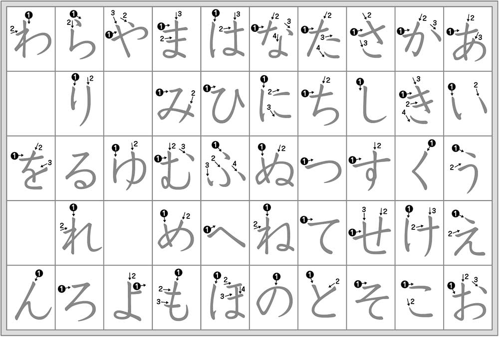

El idioma japonés se divide en 3 sistemas de escritura: "Hiragana", "Katakana" y "Kanji".
Cuando se habla de Kana nos referimos a Hiragana y Katakana. Estos son "alfabetos" fonéticos y es común encontrarlo también como silabario ya que un kana normalmente es equivalente a una sílaba de dos letras en nuestro idioma. A excepción de las vocales y el sonido 'n'.
El hiragana y el katakana son dos versiones de los mismos sonidos en el idioma, pero cada silabario tiene un uso en particular.
El hiragana es usado para escribir principalmente las palabras de origen japonés y para ciertos fines gramáticales.
